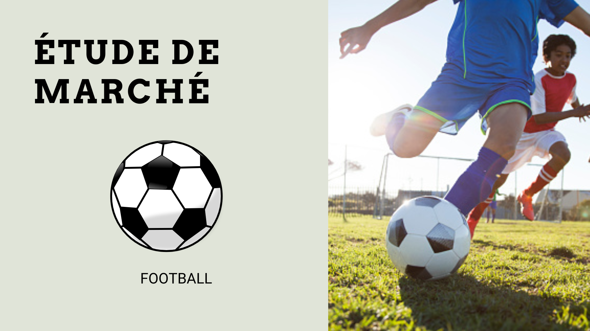

History
Football is a team sport that has existed since 1848.
Known throughout the world, football attracts billions of spectators around the world. It is therefore one of the sports that attracts the most spectators in the world.

Ruler
The rules of football make it possible to maintain good continuity in football because without these rules football would no longer be the same. This is why a central referee is present in each match to judge whether the players respect each football rule.

Olympics Games
Football was only added to the Olympic Games in the 1900s. Every 4 years since 1900, football has appeared in the Olympic Games. The Olympic Games therefore remain an important event in the world football calendar.

Statistics
The 2024 Olympic Games allowed us to discover some exceptional performances. These players sometimes helped bring their teams to the top, but others did not succeed in bringing their team to the top despite their performances.

Market study
Today the sports market is on the rise, sport is among the most profitable markets.